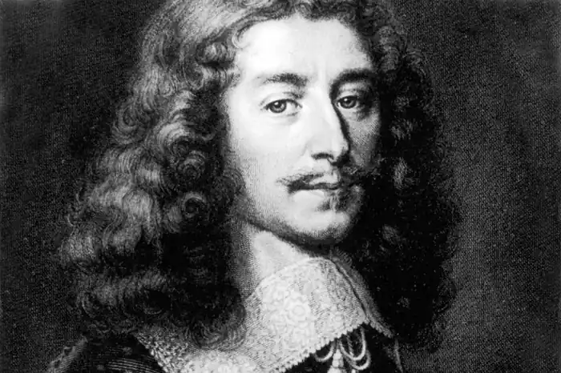
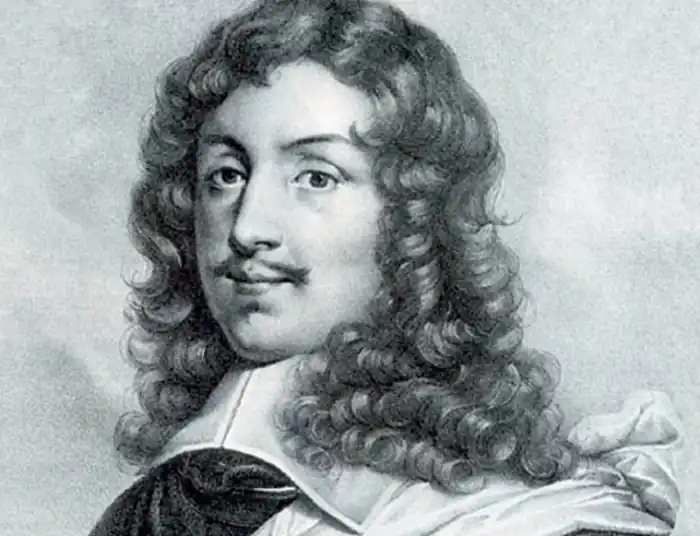

ЛАРОШФУКО, Франсуа де (La Rochefoucauld, Francois — 15.12.1613, Париж — 17.03. 1680, там само) — французький письменник.Ларошфуко був представником старовинного дворянського роду. У 1629 р. брав участь в Італійських походах, після чого залишився при дворі. Був серед змовників проти кардинала Рішельє, першого міністра Людовіка XIII, на боці королеви Анни Австрійської, керований лицарськими почуттями. За придворні інтриги його ув'язнили у Бастилії, а потім заслали у Вертей, де він провів декілька літ. Після смерті Рішельє та Людовіка повернувся до двору в надії стати фаворитом королеви, але зустрів суперника в особі кардинала Мазаріні. Знову брав активну участь у змовах, влився у рух проти Мазаріні — Фронду, очолювану принцом Конде. Після встановлення Людовіком XІV абсолютної монархії письменник втратив інтерес до політичної гри і цілковито віддався придворному життю та мистецтву. Зажили популярності малі художні форми Ларошфуко: мадригали, портрети, максими, що передавалися із уст в уста.
Перша збірка Ларошфуко вийшла друком 1659 р. і відкривалася "Портретом" автора. Це цікава психологічна замальовка, в якій Ларошфуко стверджує, що наділений розумом, вміє сильно відчувати, він гордий і діткливий. У цей самий час Ларошфуко опублікував уривки з "Мемуарів" ("Memoires", 1662), які вийдуть друком у повному обсязі лише 1817р. Ларошфуко тут детально описує події, пов'язані з Фронюю і придворними звичаями того часу. Провідною думкою "Мемуарів" є необхідність збереження привілеїв вищої знаті та дворянства, без яких, на думку автора, неможливе процвітання великої Франції. Розмірковує він і про причини поразки Фронди, вважаючи, що каталізатором її розпаду та загибелі став егоїзм її окремих керівників.
У 1665 р. письменник видав перший том головної праці "Роздуми, або Висловлювання і мотальні максими" ("Reflexions, ou Sentences et Maximes morales", 1665). Книга була видана анонімно, але її авторство ні для кого не залишалося загадкою. Згодом Л. постійно доповнюватиме свою збірку новими максимами, шліфуватиме вже написані. Вони вважаються класичними зразками афористичного жанру. Успадкувавши заповіти теоретиків класицизму — Ф. Малерба та Н. Буало, Ларошфуко ретельно працював над формою своїх творів, прагнучи максимальної дохідливості думки. У "Роздумах" очевидна опора на філософські погляди П. Гассенді та Р. Декарта, котрі вважали, що духовний світ індивідуума пов'язаний і нерідко безпосередньо зумовлений фізіологічною сутністю. Таким чином, людина є частиною спільного природного світу і розвивається за тими самими законами. Наприкінці життя великий вплив на творчість письменника справила найвизначніша романістка свого часу М. де Лафайєт, авторка "Принцеси Клевської". Завдячуючи їй, митець пом'якшив різкість багатьох своїх висловлювань. Ларошфуко вважав, що суспільство розвивається і рухається вперед лише завдяки таким людським якостям, як егоїзм і шанолюбство. Щоправда, він обмовляється, що егоїзм і себелюбство бувають різними. Письменник визнає лише "високий" егоїзм, який не несе в собі якого-небудь негативного заряду. Ларошфуко розуміє, що будь-кому властиве прагнення до насолоди і що людина не приймає страждання. Для досягнення своєї мети вона й послуговується власним інтересом, який домінує над рештою якостей. Згідно з його філософією, егоїзм сам по собі не несе етичного заряду. Етична оцінка виникає лише у випадку зіткнення кількох приватних інтересів. Людина має бути зацікавлена діяти порядно, а це також пов'язано з її фізичним самопочуттям, і зі станом суспільства, в якому вона живе і діє. Егоїзм і себелюбство стають негативними якостями в тому випадку, якщо не стримуються розумом. Суспільство нормально функціонує лише там, де розум перемагає пристрасті, і держава повинна в цьому процесі відігравати свою позитивну організуючу роль. Як вважав Ларошфуко, така суспільна організація як абсолютизм не сприяє громадянському миру і процвітанню індивідуальних характерів. Абсолютизм спонукає приватну людину до бунту. Такий погляд на речі зрозумілий, оскільки виправдовує й особисту долю письменника. За кожним висловлюванням Ларошфуко вгадуються відомі історичні персонажі, його опоненти та друзі.